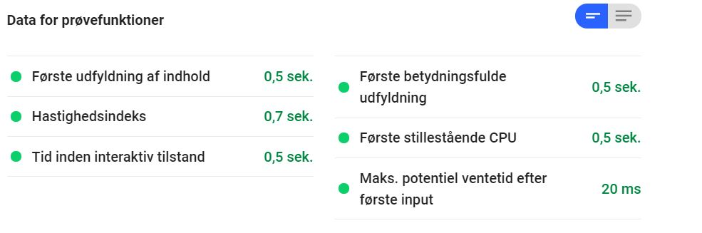
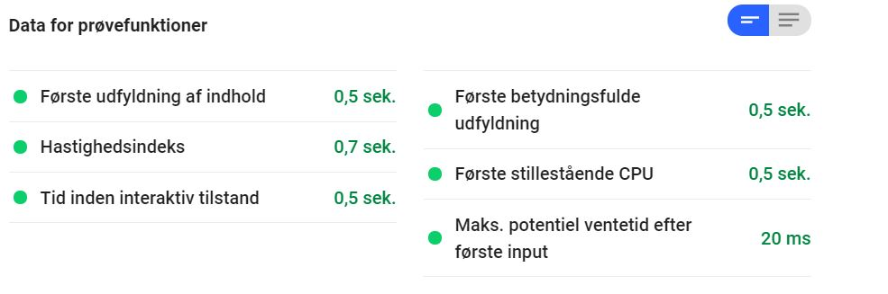

Tema 5 - Grundlæggende indhold
JanWGEnbrug
* 05.03.01_redesign_og_temadokumentationI dette projekt skulle vi finde vores egen kunde og redesigne deres hjemmeside, desuden skulle vi inkludere én eller flere videoer med en samlet spilletid på 3 min og en kvadratisk video på 30 sek til reklame på sociale medier. Her brugte vi to metoder til at udvikle siden; Scrum og double-diamond metoden. Derudover udvikledede vi færdigheder i Adobe Premiere Pro.
Double diamond metoden består af 4 dele:
- Discover
- Define
- Develop
- Deliver
Her brugte vi viden fra vores tema 3 - Grundlæggende UX til at undersøge virksomhedens profil, brugerprofiler og den eksisterende hjemmeside. For at vide mere om virksomhedens profil og brugerprofiler brugte vi interview research til at fastlægge dette. Fra dette fandt vi ud af at virksomheden gerne vil have at hjemmesiden skulle fremstå proffesionel, troværdig, overskuelig, indbydende og med fokus på genbrug i deres varer, samt at dens målgruppe var unge, kvalitetsbevidste og med interesse for rustikke møbler lavet af genbrugstræ. Vha. BERT-test (type af survey undersøgelse) og 5-sec test (type af oberservations/interview research), ud fra dette kom vi frem til at siden fremstod uproffesionel, men simpel. Der var ikke meget indhold på siden og sitemap var derfor meget simpel, så derfor valgte vi at udvide indholdet og dermed give et mere defineret flow, så den bliver overskuelig for brugeren. Desuden tog vi lighthouse audit af siden for at se, hvor godt den klarede sig der.
DefineHer gik vi i dybden med, hvad vi gerne ville ændre for at give siden et opdateret look. Vi udviklede et moodboard, hvor vi tog stor inspiration fra Big fish poke da vi godt kunne lide deres startside med videoen og logoet. Vi udviklede en wireframe og en prototype i Adobe XD, hvor vi desuden definerede styletile og fotostil. Vi valgte at lave en one-pager, så flowet på siden ville være nemt og overskueligt, selvom vi tilføjede mere til siden.
DevelopVi skulle både lave video og en hjemmeside. Vi startede med videoen, hvor vi lavede storyboard, intervie guide og produktionsplan. Det var vigtigt for os at videoerne skulle sælge siden, så vi lavede en video, der kun bestod af b-rolls til landingpage for at få den til at se spændende og indbydende ud, samt vise, hvad virksomheden sælger og arbejder med. Længere nede på siden, hvor man kunne læse om virksomheden, lavede vi et interview, hvor spørgsmålene var designet til at sælge produktet, og hvor der var b-rolls ind imellem for at vise ejeren af virksomheden arbejde, så man kan se, at det er håndlavede produkter. Desuden producerede vi en kort reklame video med et kvadradisk format, som kunne bruges på de sociale medier. Vi brugte Adobe Premiere Pro til at redigere og sætte videoerne sammen. Her brugte vi desuden Adobe Photoshop til at lave et overlay med logoet på, så vi kunne bruge det i videoen.
Efter at have filmet videoerne begyndte vi desuden at programmere hjemmesiden fra bunden. Her brugte vi vores wireframe og layout-diagram så alle kunne forstå, hvordan siderne skulle bygges op. Desuden brugte vi github til at arbejde på samme tid på dokumentet. Vi havde en smule problemer med det, da en af vores computere blev ved med at oprette en .idea fil som min computer ikke kunne læse, og derfor ikke kunne pushe eller committe noget som helst. Vi fik dog løst dette ved at en af de andre enten slettede eller gjorde idea filen synlig - altså slette punktummet foran navnet - og pushede den version. Vi fandt desuden ud af at vi skulle skrive i video tag'et, at startside videoen skulle være muted, ellers ville chrome ikke lade videoen spille automatisk. Dette skyldes at chrome ikke vil lade sider afspille lyd før brugeren har interageret med siden. Jeg brugte desuden JavaScript til at indsætte en Google Maps på siden, hvor man kunne zoome ud og ind og se placeringen af virksomheden. Da jeg ikke ville betale for at have det hostet på siden, står der "for development only" som watermark på kortet.
DeliverTil sidst skulle vi teste den afsluttende side på en testgruppe, her brugte vi igen BERT-test og 5-sek-test. Her så vi, at siden fremstod simpel, overskuelig og professionel, vi tog også en lighthouse audit, men satte det aldrig ind på vores dokummetationssite. Jeg lavede den dog igen og resultaterne ses forneden. Her ses det at siden er blevet forbedret i forhold til den gamle side, men kryptering af billeder og formater ser langsommere ud, dette skyldes dog nok at vi har langt flere billeder og to videoer, hvilket den ganle side ikke havde.

 
